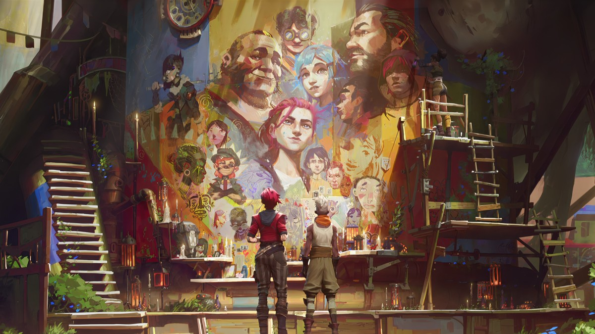

Projeto de site da Carol
Projeto de site da Carol
Seja bem vindo ao meu projeto de Site da Carol
Este é um projeto de site da Carol, onde ela fala sobre a animação da Netflix chamada Arcane.
Episódios
Aqui estão os episódios da primeira temporada de Arcane:
- Ep 1 - Entrando na brincadeira
Assistir
- Ep 2 - Alguns mistérios não devem ser descendados
Assistir
- Ep 3 - A violência é essencial para a mudança
Assistir
- Ep 4 - Feliz dia do progresso!
Assistir
- Ep 5 - Todos querem ser meus inimigos
Assistir
- Ep 6 - Quando as paredes desabam
Assistir
- Ep 7 - O gartoto salvador
Assistir
- Ep 8 - Água e óleo
Assistir
- Ep 9 - O monstro que você criou
Assistir
